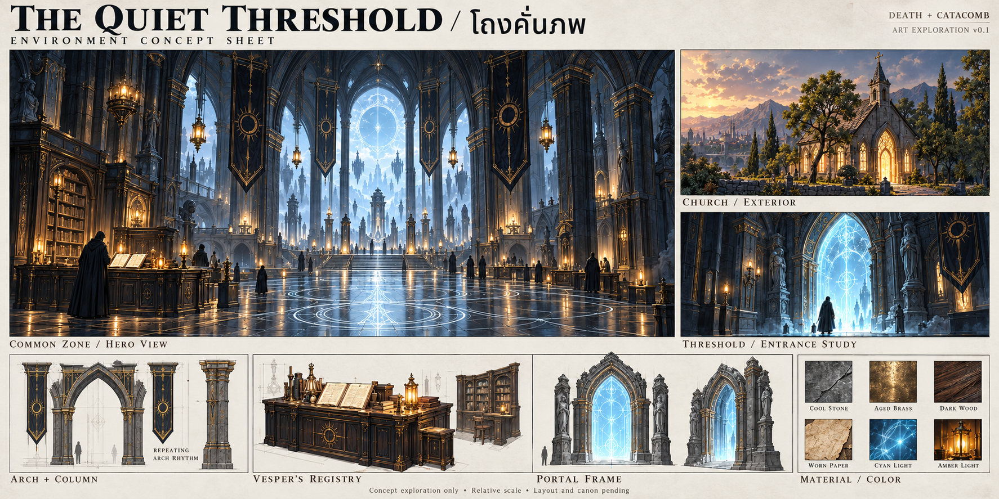
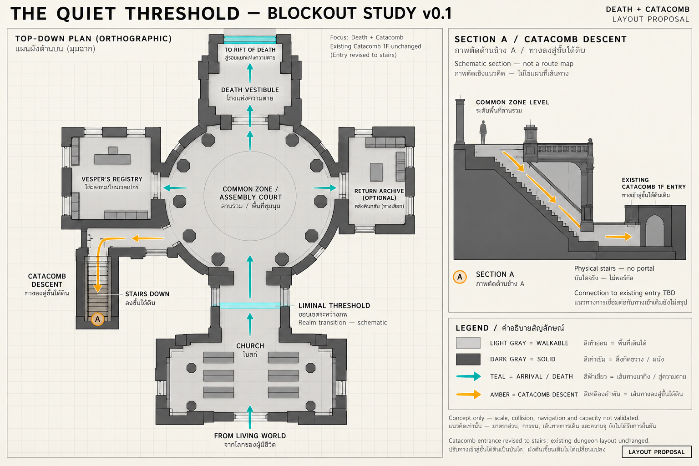
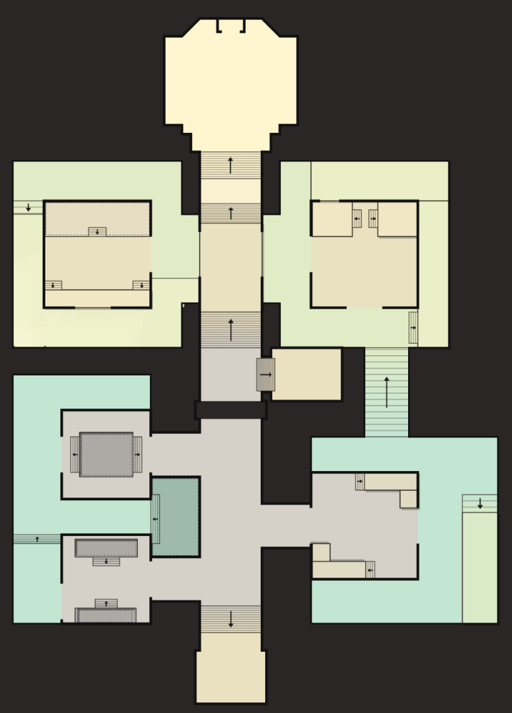

Catacomb — 15 October 2026 update
Status: the latest direction and work package have been accepted as a working draft for inclusion in the existing reader. This does not finalize Canon, select every alternative, or establish Unity implementation/playtest evidence. Web edition updated 15 October 2026.
Read first — changes since the previous edition
| Topic | Latest direction | Boundary |
|---|---|---|
| Narrative | In-game dialogue throughout all four quest sets, with optional environmental text | No additional objective or mandatory Lore reading |
| Common Zone | Death + Catacomb only; Church → Threshold → Hub | Not a universal Rift/DLC lobby |
| Catacomb entry | Stairs from Hub to the existing entrance Safe Room | Connector/loading still need review; no Checkpoint relocation |
| Gravewarden | Final-room Large Skeleton = Gravewarden 1F | Retain existing combat draft; no new boss stats/abilities |
| Layout | New LD image is the latest working base | Existing content layers require remapping |
| Tarantula | Present its changing-battlefield identity before adding mechanics | Retreat Tell is optional; wait A/B remains unselected |
Acceptance of this working direction does not settle TBD values or unsupported systems.
Core direction — afternoon Quick meet
The supplied GD Aon log, marked 14:23, describes 1.Concurrent / 2.Realtime Responsive / 3.Server Stability, including security. The game chooses 1 + 3 while approximating the perceived responsiveness of 2 (“fake 2”).
- WASD movement; free aiming, movement during casts and a dodge action remain unspecified.
- Avoid True Projectile gameplay requiring continuous real-time position/collision/condition checks, dynamic interception or changing direction/speed in a precise skillshot.
- This is not a blanket ban on arrow/spell visuals. Separate ranged presentation from hit resolution and agree range/LOS/cancellation timing with Core.
- Pools, frontal attacks, Roar and retreat do not inherently require True Projectile simulation. Their server performance is not verified.
- CS/RO/WoW/FFXIV are examples attributed to the meeting, not verified architecture classifications or benchmarks in this document.
Common Zone — art and blockout references

An atmosphere/architecture proposal, not final Art Direction, scale or production readiness. Earlier Catacomb portal imagery is superseded by the stair entry below; this does not repeal the Church threshold or Death destination.

Church → Threshold → central Hub → southwest stairs → lower landing → existing 1F entrance Safe Room. Stair origin/connection are working proposals, not canonical geography or a Unity scene. Descent does not rename 1F to B1.
Master Vesper remains at his gatekeeping post. Entrance/Checkpoint NPC quest duties stay unchanged. Returning to Hub is optional.
Latest LD layout — base for further work

This is the accepted latest layout working base. Older content/route images remain references, not new spawn coordinates. No confirmed legend supplies arrow meaning, colour eligibility, height, scale, one-way movement, jumping, cross-level LOS or capacity.
The broken-floor rule remains an impassable block, not a jump crossing. The new drawing alone does not identify the dark transverse strip as that block or as an underpass. Label Safe Room/Checkpoint/final room and reconcile routes with LD.
Packs and activities — continue existing work
The previous placement image already includes four circles and player-count labels: P1 4–5, P2 6–8, P3/P4 8+. Recommendations only, not entry minima or measured balance.
At Tarantula B the final old image shows two Archers, whereas confirmed text specifies Mage1 + Melee1 + Archer1. Keep confirmed text pending reconciliation; do not add the second Archer automatically.
Rite and Lost Chamber have candidate anchors on the previous bitmap. Recheck them against this LD base; do not transfer pixel pins directly. Both remain optional, preserve the main quest and have not demonstrated reduced player clustering.
New detail
Decisions before implementing affected systems
Ranged hit resolution; linked aggro/leash; respawn/shared state; personal boss access; Hub travel; content/quest/A→B/activity remapping; final Canon/dialogue. Rewards remain outside scope; cover/elevation belong to LD.
Sources are meeting notes and local documents, not observed gameplay. Existing Codex Sim remains a hypothetical document walkthrough on the previous layout, not a test of the new LD drawing.